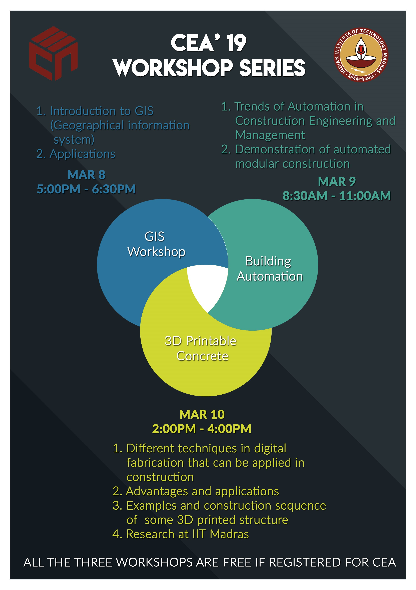
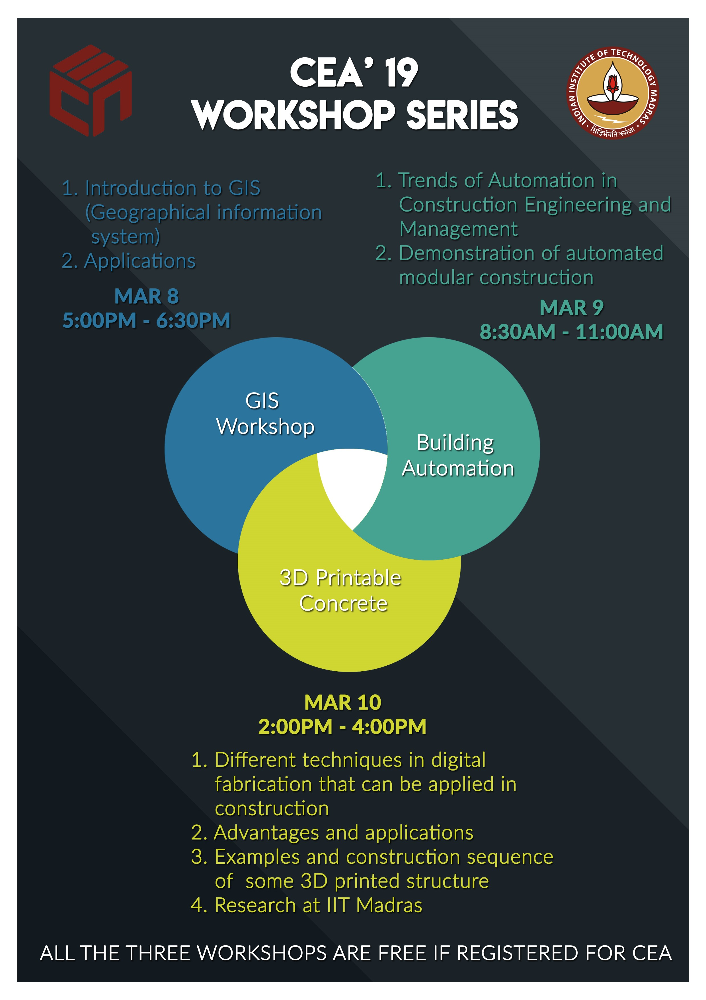

Paid Workshops
Free Workshops
Staad Pro Workshop
1.) Basic Intoduction on STAAD PRO
2.) Design of a multistoreyed building
3.) Assigning load causes to the structure.Dead load,Live load(Self weight of the structure,wind load,snow load,crane load etc)
4.) Analysis of the Building(SFD,BMD and Seismic Analysis)
5.) Bring your own laptops (64-bit processor only)
6.) The fee for this workshop is Rs.500 per person
7.) Register for the workshop through profile page
3D Printable Concrete
Different techniques in digital fabrication that can be applied in construction
Advantages and applications
Examples and construction sequence of some 3D printed structure
Research at IIT Madras
On Spot Registration
GIS Workshop
Introduction to GIS (Geographical information system) and applications
On Spot Registration
Building Automation
Trends of Automation in Civil Engineering (lecture) and Demonstration of automated modular construction
On Spot Registration